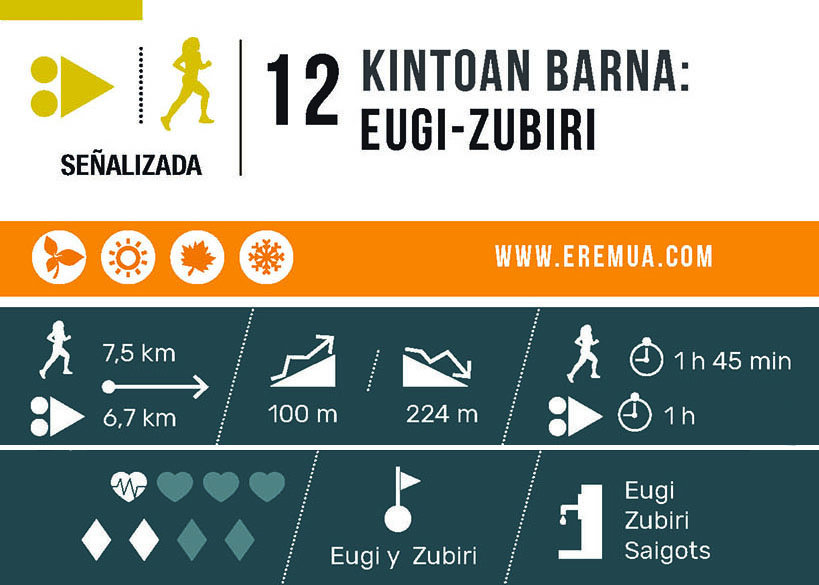
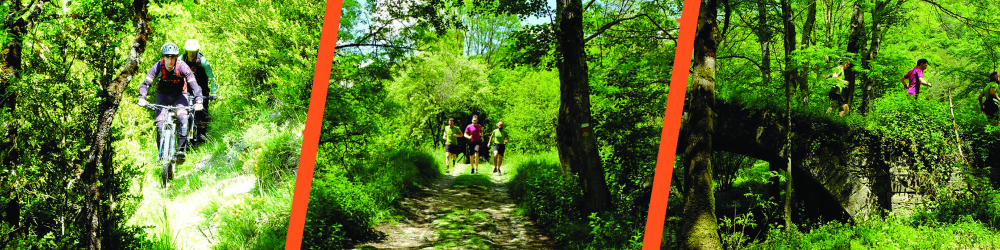
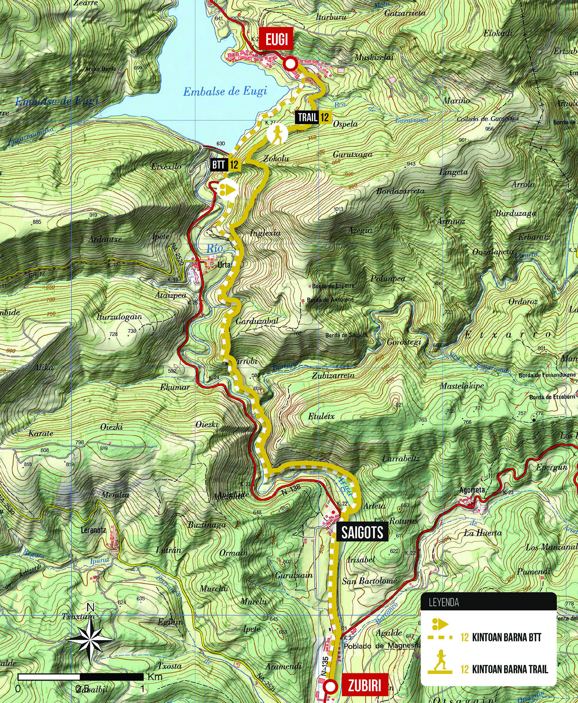
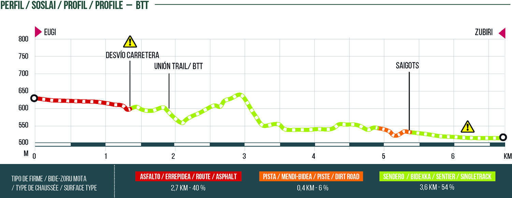

ESPAÑOL
EU
Volver a la lista


DIFICULTAD ALTA
Longitud total
Trail: 7,5 km
BTT: 6,7 km
Desnivel positivo
100 m
Desnivel negativo
224 m
Ruta de sentido bidireccional que une las poblaciones de Eugi y Zubiri a través de una combinación de senderos que discurren paralelo al río Arga. Durante 7,1 kilómetros cruzaremos zonas de bosque y hayedo, la regata de Etxarro o el puente medieval de Saigots.

En la zona de Eugi, saliendo del pueblo tenemos dos variantes de sendero: una para bicicletas que parte por la carretera y entra por sendero en el cementerio de Urtasun, y otra, saliendo por la calle Ospel en dirección a las faldas de Azegi (Zokolu). 500 metros antes del puente medieval de Urtasun, ambos senderos se unen y en adelante el sendero es apto para bici y senderismo.

INICIAR RUTA